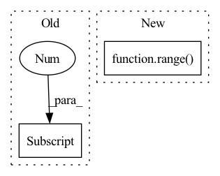

Pattern ID :990
Before Change
nn.BatchNorm1d(self.channels[6], eps=0.001, momentum=0.1, affine=True, track_running_stats=True),
nn.ReLU(),
nn.Dropout(p=0.2, inplace=False))
self.conv3 = nn.Sequential(nn.Conv1d(self.channels[6] , self.channels[7], kernel_size=1),
nn.BatchNorm1d(self.channels[7], eps=0.001, momentum=0.1, affine=True, track_running_stats=True),
nn.ReLU(),
nn.Dropout(p=0.2, inplace=False))After Change
for i in range(5):
pad = block_k[i] // 2
for rep in range( repeat) :
self.B.append(JasperBlock(block_channels[i], block_channels[i+1], block_k[i], pad))
self.C2 = nn.Sequential(nn.Conv1d(512, 512, kernel_size=87, padding=86, dilation=2),In pattern: SUPERPATTERN
Frequency: 3
Non-data size: 2
Instances Fragment ID: 2053882
Project Name: ivankunyankin/quartznet-asr
Commit Name: f05723b0642e1f37aa316714a7fcb1dc4dca889d
Time: 2021-06-28
Author: IKunyankin@gmail.com
File Name: models.py
Class Name: QuartzNet
Method Name: __init__
Parent Class: nn.Module
Fragment ID: 2053871
Project Name: benedekrozemberczki/pytorch_geometric_temporal
Commit Name: 2775ce5253580a592becb764f1a76d82c8e76e6e
Time: 2021-03-17
Author: He_YX@outlook.com
File Name: torch_geometric_temporal/nn/convolutional/astgcn.py
Class Name: cheb_conv_withSAt
Method Name: __init__
Parent Class: nn.Module
Fragment ID: 2053879
Project Name: biomedsciai/fuse-med-ml
Commit Name: f0e7b519293cca15dd589ce61bb8b77ee4d7bb5a
Time: 2022-11-10
Author: avihu112@gmail.com
File Name: fuse/dl/models/heads/common.py
Class Name: ClassifierFCN
Method Name: __init__
Parent Class: nn.Module